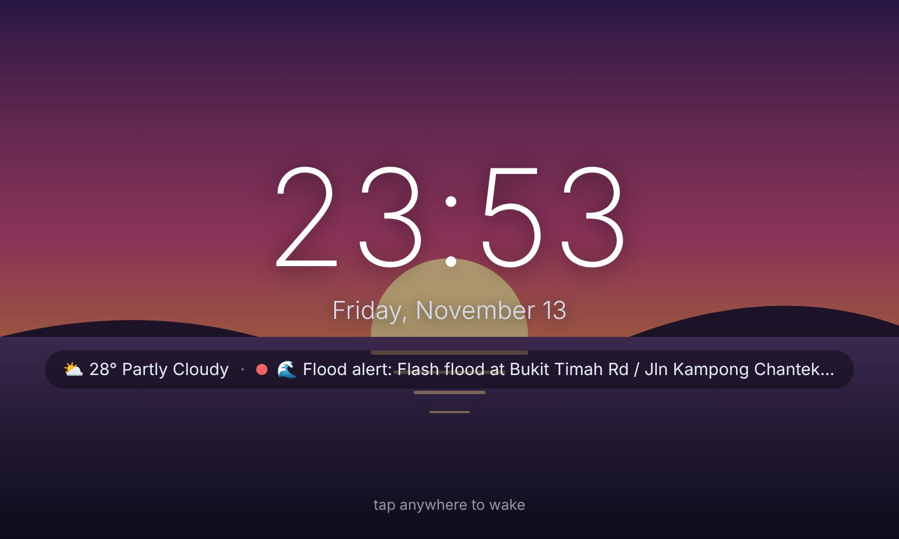
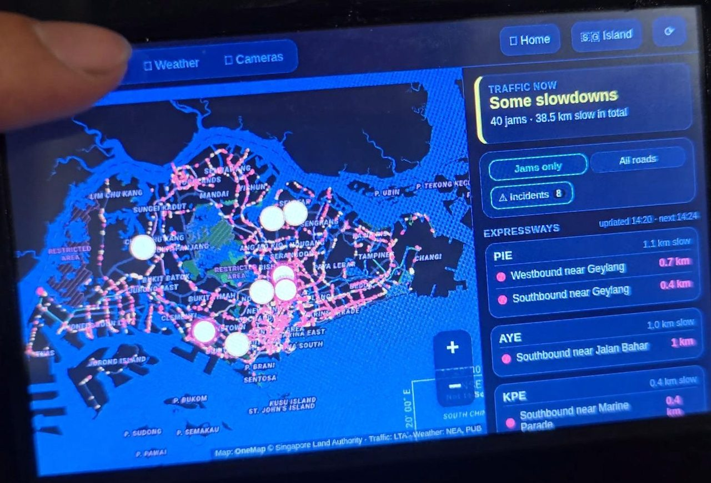
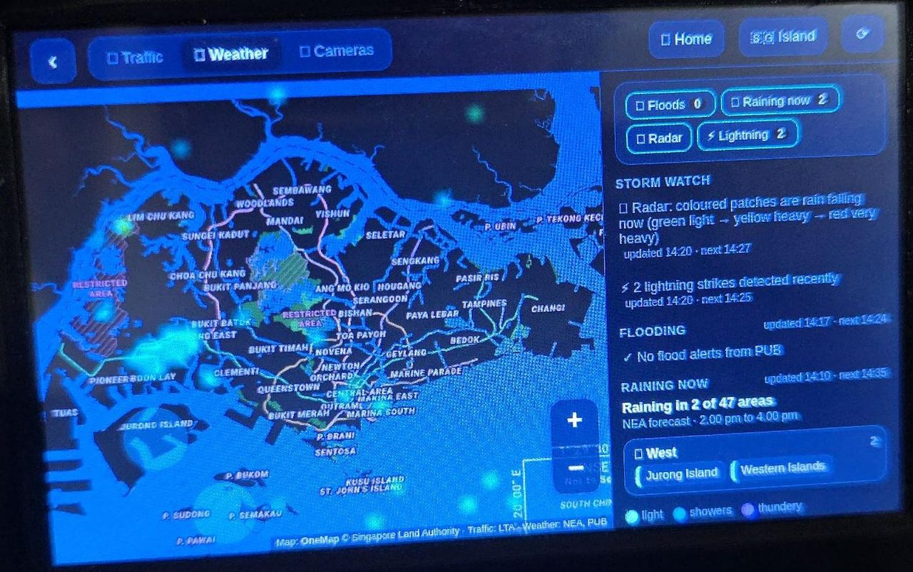
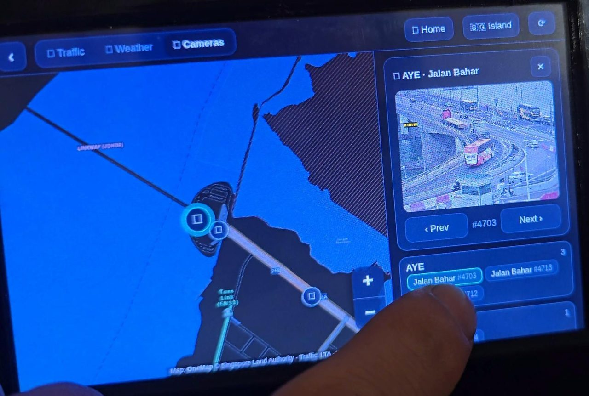
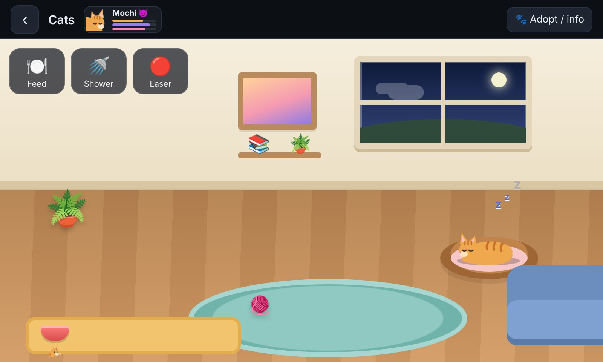
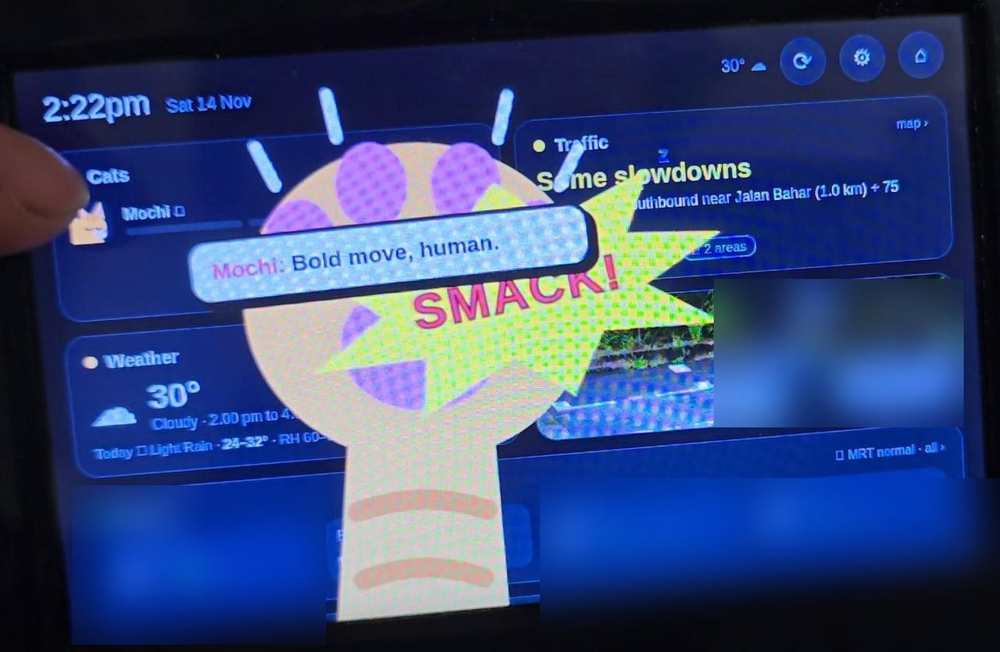

The idea
I’ve always wanted a photo slider on my desk, and I had a Raspberry Pi 3 and a small screen doing nothing. But a whole computer that only cycles through photos felt like a waste.
So I asked what else that screen could tell me at a glance. Before I leave home: is it going to rain, is traffic bad, when’s my bus? When I get back: what’s happening, from Singapore news to tech. And then, because a desk should have some personality, a cat.
What it does
- Weather: the current two-hour forecast for my area and today’s outlook, from NEA.
- Traffic: one card that sums up the whole island: jams, accidents, flash floods and where it’s raining, from LTA and PUB.
- Buses and trains: live arrivals at the stops near home, counting down between updates, plus MRT and LRT disruption alerts.
- News: four categories (Singapore, World, Cyber security, Tech) with a clean reader view.
- Photos: a photo clock when nobody’s using it, a gallery with delete and undo, and photos sent straight from a phone.
- Cats: virtual pets that live in a room and wander onto the dashboard.

Tap the traffic card and it opens an island map with three tabs: traffic, weather and cameras.



How it’s put together
DeskOS is a web page running full screen in the Pi’s browser, with a small server on the same Pi doing the work the page shouldn’t do itself.
The Pi has no keyboard, so everything is tap-only, including Settings. Choices are saved on the device and override the defaults in a config file.
Photos from a phone
The photo frame was the original point, so getting photos onto it had to be easy. Tap Add from phone, and DeskOS shows a QR code. Scan it on the same Wi-Fi, pick photos, done.
The transfer runs over plain HTTP on the local network, so I didn’t want photos crossing the Wi-Fi readable. Each image is encrypted on the phone before it’s sent. The key travels inside the QR code, in the part of the link after the #, which browsers never send over the network. Each code also expires, so an old one can’t be reused.
The cat
I’ve always liked desktop pets like Desktop Goose: apps that wander around your screen and get in the way. DeskOS has its own version.
The cats live in a room where you can feed them, play with a laser pointer, or catch one and give it a shower (it does not want a shower). Each cat has a personality and needs that keep changing in real time, even while the screen is off.
The fun part is when a cat leaves the room. It walks onto the dashboard, knocks cards askew, leaves scratch marks, and at bedtime curls up on the weather card because that one is “warm”. Tap a messy card to tidy it, and shove the cat off.


Security so far
This is the part that’s still in progress, and I’d rather be clear about where it stands:
- Calls to outside services go over HTTPS.
- I manage the Pi over SSH.
- Photo uploads use local HTTP, with each image encrypted before it leaves the phone.
I haven’t yet tested how well this holds up. A proper hardening pass is next: reviewing the encryption, locking down SSH, closing every port the Pi doesn’t need, and running the screen as a restricted user.
What’s next
- The security review above.
- Summarise and Read aloud buttons in the news reader, once I pick an on-device summariser that the Pi 3 can actually run.